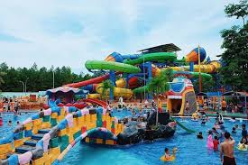

Ocean Park BSD City merupakan salah satu wisata populer di Tangerang untuk tempat menghabiskan liburan atau akhir pekan bersama keluarga. Ocean Park BSD City mempunyai kolam renang dengan wahana menarik dan seru untuk dicoba. Ocean Park BSD City mempunyai wahana Flying Tower, yaitu sebuah seluncuran spiral berkelok dengan ketinggian 13 meter, cukup menantang.Jika belum cukup menantang, para pengunjung dapat mencoba seluncuran Slide n Fun dengan ketinggian 15 meter dan panjang 96 meter. Selain itu terdapat Splash Town atau ember tumpah yang akan mengguyur para pengunjung dengan air segar.Kolam ombak bisa kamu coba jika ingin merasakan ombak seperti di pantai, setiap satu jam sekali ombak akan menerjang para pengunjung. Setelah itu para wisatawan dapat mencoba seluncuran berwarna-warni di Race Slide. Ocean Park BSD City juga mempunyai Kolam Arus untuk mencoba sensasi terbawa air yang tenang setelah lelah mencoba berbagai wahana airnya.
Harga tiket Ocean Park BSD City Tiket masuk Ocean Park BSD City untuk weekday Rp 65.000 per orang sedangkan weekend Rp 100.000 per orang. Harga tersebut dapat berubah sewaktu-waktu tergantung dari kebijakan pengelola objek wisata. Baca juga: Rekomendasi 5 Waterpark di Tangerang, Harga mulai Rp 20.000 Jam buka Ocean Park BSD City Jam operasional Ocean Park BSD City buka setiap hari kecuali Jumat, mulai pukul 11.00 sampai 16.00 WIB di weekday. Sementara weekend dan libur nasional mulai pukul 09.00 sampai 16.00 WIB.
Lokasi Ocean Park BSD City Ocean Park BSD City berlokasi di Jalan Pahlawan Seribu CBD Area, Lengkong Gudang, Kecamatan Serpong, Kota Tangerang Selatan, Banten. Jarak Ocean Park BSD City dari pusat kota Tangerang Selatan 9,1 kilometer dapat ditempuh selama 27 menit perjalanan.